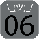

 TryingDev06
TryingDev06
is a repository for my jailbreak tweaks and themes.
Add to Cydia
Featured Packages
Zircon Light
This is a simple theme that features teal colors with a white background. It also includes recolored notification badges.
More info
Zircon Dark
This is a simple theme that features teal colors with a black background. It also includes recolored notification badges. Designed with OLED displays in mind.
More info